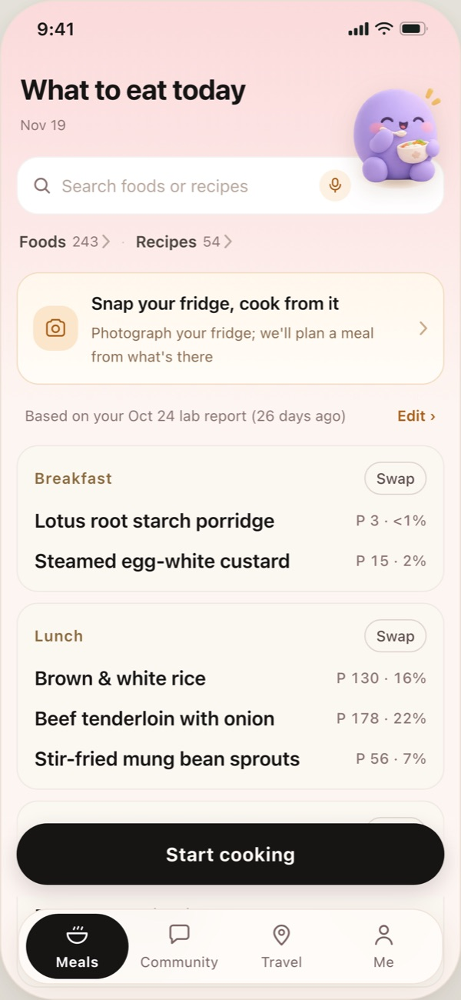
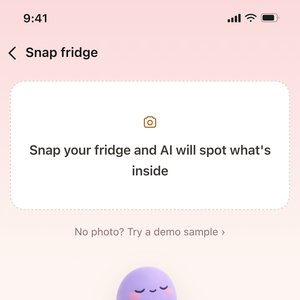
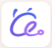
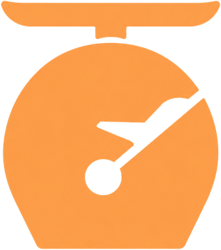
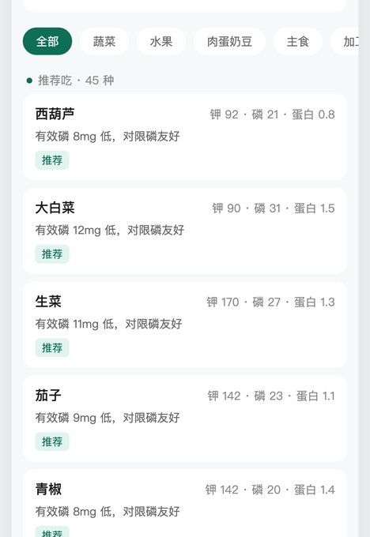
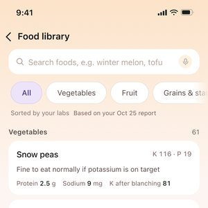
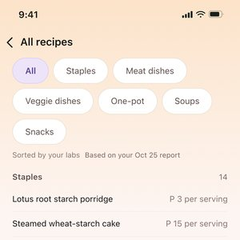
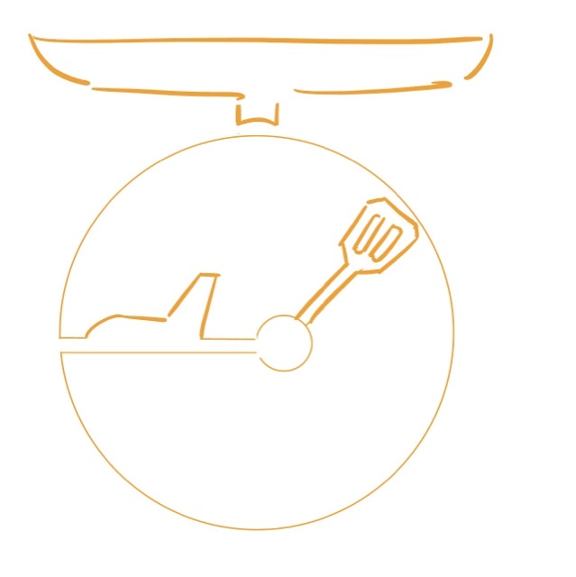
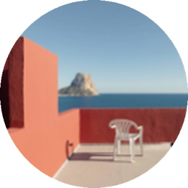
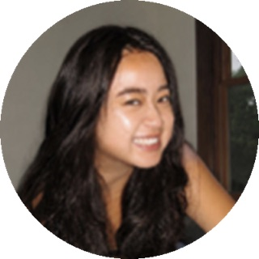

More foods to choose from
- K0Most of the fridge
- K1Grade A, then B
- K2Lighter on today
Start from the fridge
Dishes that use what is already at home come first.
Dialight 透亮 · WeChat mini-program
For families living with kidney failure. Fixed rules keep it safe, a language model makes it personal, and a community connects the families who use it.
Dinner from what is already in the fridge Someone to ask who has been there A weekend away, with dialysis on the way One page to bring to the next visit


Meals Community Travel Me
One month for my teammate’s mother, on dialysis since 2024.
“The best dialysis machine in the world sends its data out every day, to the hospital. At home, we still work out by hand how many pieces of spare rib she can eat today.”
My teammate
1visit to her doctor
90meals worked out at home
Low in one, high in the next.
Cheese · per 100 g
Low in potassium. High in phosphorus and sodium.
Same plate, a different answer.
KDOQI 2000
Below target · g protein per kg a day
A new lab report, new limits.
mg a day · example months
From 108 surveys and 12 interviews in six Chinese cities.
Five moments families told us about, again and again.
The numbers are easy to read. Turning them into dinner is not.
The printed table says one thing. The WeChat group says another.
Better to eat less than to eat wrong.
Low salt, low potassium, low phosphorus. What is left to cook?
Dialysis keeps our circle small.
What we heard, and what we built for it
I can read the numbers. I can't turn them into dishes.Her report values set which dishes are allowed. Within that, the model fits them to her taste and breaks each into easy steps.
The table and the WeChat group never agree.One food table, built from sources anyone can check, gives the family a fixed standard they can rely on.
I’d rather go hungry than eat the wrong thing.Protein now counts in her favour, so eating less no longer looks like the safe choice.
With so many limits, I don't know what to cook.Dishes are ranked by what is already at home and what her report allows.
Dialysis keeps us close to home.Travel: dialysis centres by city, a checklist for the first long trip, an emergency card for the lock screen.
Paraphrased from the interviews.
Every patient-side dialysis app we found had gone quiet.

Ant AfuAI assistant
DialightStarts from daily lifeLogos belong to their owners and are shown only to compare products. Status as of Oct 2026, from public records.
Four weeks, October to November 2026.

Two builds · clinic
V1 judged one food at a time. V2 added the four sections and sorted every food, safest first. Both answered the question we assumed families had. 待确认：截图里的化验值是否来自真实报告
Back to paper
After the interviews we stopped adding screens and drew the day instead.
lab report → 3 ways in → rules rank → 1 recipe card
fridge first → grade A/B → lighter on today
5 boxes → 3 things
Frozen build · kitchen
Warm colours, large type, the fridge photo as the one solid button. Twelve patients use this build now.
What I learned
Most could find the numbers. Doing the sum every meal wore them down.
More foods to choose from
Dishes that use what is already at home come first.
Eat less, to be safe
Protein counted against a dish
Protein counts for it
Fear of eating wrong left many short of protein.
More numbers to check
Every number comes from the table. Nothing to double-check.
The same day, with Dialight
The same five moments, now with Dialight.
Morning
It copies what is printed and stops there.
| Test | Result | Unit | Reference | ||
|---|---|---|---|---|---|
| Potassium | 4.2 | mmol/L | 3.5–5.5 | 2 | |
| Phosphorus | 2.25 | H | mmol/L | 1.13–1.78 | 3 |
| Calcium | 2.31 | mmol/L | 2.10–2.50 | ||
| Sodium | 138 | mmol/L | 135–145 | ||
| Albumin | 33 | L | g/L | 38–55 | |
| Triglycerides | 1.8 | H | mmol/L | 0.45–1.70 | |
| Fasting glucose | 6.1 | mmol/L | 4.4–7.0 | 4 |
The model has one job here, which is transcription: the number, the unit, and the lab's own flag. It does not explain what a high phosphorus means. Turning the sheet into today's limits is a separate step, done by a short fixed table in the code that the model cannot change.
The fixed table. Phosphorus 800, 1,000 or 1,100 mg for a high, in-range or low result. Potassium 1,800 mg if high, otherwise 2,200. Sodium 1,500 mg if high, otherwise 1,900. Protein 1.2 g per kg of dry weight if albumin is low, otherwise 1.0. Phosphorus 800 to 1,000 mg and protein 1.0 to 1.2 g/kg match Chinese dialysis guidance. The other figures, and setting limits by lab result at all, are the team's own.
Why it only transcribes. China's Detailed Rules for the Supervision of Internet Diagnosis and Treatment (Trial), 2022, say AI software may not stand in for a physician (Art. 13) and may not generate prescriptions (Art. 21). The rules bind hospitals offering care online; we drew our own line from them.
Breakfast
A fixed rule sorts every food. The model never grades one.
Phosphorus against protein, per 100 g of edible portion
Each mark is one food. The zones are cut at 10, 15 and 20 mg of phosphorus per gram of protein.
Click a mark to see where its numbers come from.
For meat, fish, eggs and soy, the rule is phosphorus per gram of protein. Under 10 mg/g is A, 10 to 15 is B, 15 to 20 is C, and over 20 is D. The letter says what to do with the food. It is not a health score.
– of the – protein foods land where that ratio puts them. The other – were caught by a rule higher in the list: the sodium cap, the potassium gate, or dried goods that need soaking first.
Values. –
Cut-offs. Grading standard v1.0, 8 Nov 2026, twelve rules checked top to bottom. The ratio cut-offs are the team's; the literature uses them only as table boundaries. The 600 mg sodium line is the UK front-of-pack red for salt.
Lunch
The model writes the card. A fixed checklist decides whether you see it.
Braised pork is not among the 54 recipes, so this is the one place the model writes something new: a one-person version with grams and steps. A checklist in the code then goes through it line by line. Per-serving caps: phosphorus 600 mg, potassium 1,500 mg, sodium 1,200 mg, protein 60 g.
The three test cards were written for this page and run through the prototype's own check, offline, on 20 Nov 2026. 定稿前你自己重跑一遍
Before dinner
Because of one lab sheet. Change a single number and the day is rebuilt.
The meals are picked by rule from recipes graded A or B: a staple and a protein at breakfast, a staple, a protein and a vegetable at lunch and dinner, with the day's sodium kept under the limit. Above, the only difference is the potassium result: 4.2 as printed, and 5.9. A result above 5.5 mmol/L moves the limit from 2,200 to 1,800 mg.
Not built yet: re-planning dinner after a lunch that went over.
Evening
One page, and it says how many days it is based on.
–of 30 days have a record in the demo month.
| Phos. | Potas. | Calcium | Protein | |
|---|---|---|---|---|
| 1–7 Nov | 1.3 | 1.1 | 0.6 | 0.9 |
| 8–14 Nov | 1.6 | 1.3 | 0.5 | 1.0 |
| 15–21 Nov | 1.4 | 0.9 | 0.7 | 0.9 |
| 22–30 Nov | 1.2 | 0.8 | 0.6 | 0.8 |
Each day with a record fills a column. The page gives each nutrient by week as a multiple of its limit, lists the high-phosphorus foods that kept coming back, and leaves the bottom third for the patient's measurements and the doctor's handwriting. Month and page both run on the prototype's invented sample.
“待补：一位内测用户的原话（不写名字），说用了之后哪里变轻松了”
Beyond the meal plan
Getting out of the house, and finding each other.

Food library243 foods in 12 groups, each with its source.
Recipes54 recipes and three worked examples of what not to cook.How it stays safe
The model writes the words. The table decides the numbers.
1Checked before anyone sees it
Four gateschecking the card, not the nutrition advice
2Built on a table you can trace
Every value goes back to a figure in a published food table. None is made up by the model.
≈ marks a design estimate.
Three lines it does not cross
If the model fails
No network, a timeout or a malformed answer: the app falls back to the fixed calculation.
Design
透 dialysis 亮 light
My part
I started the project after seeing what my teammate’s family went through, and I led the team. We built every version together. As product manager I wrote the decision table and the product spec, and decided what the product would and would not do, including the rules the language model may not cross. I drew the logo and made the film.
The decision table, 3 Nov
One rule: every question gets one answer, one owner and one date. "Let's think about it" was not an allowed answer.
| Question | Answer |
|---|---|
| How many cities does travel cover? | The mid-term plan said eight. Twelve days was not enough to check eight, so two. |
| When does someone have to sign in? | Only to post in the community. Looking things up needs no account. |
| Who vouches for the food values? | The plan promised a teammate would check them, and nobody had taken it on. We asked two dietitians to review the data. |
The logo

A kitchen scale. In my sketch the needle was a spatula. In the final mark it became a plane, so one dial holds both meals and travel.
The team

Li ZhichengProject management and engineeringCornell
Mao KelanOperations and brandCornell待确认：四位队友同意放照片
Started during the Tsinghua SDG Open Innovation Marathon × S-Makers, 2026.
Fine print
A filled dot means read from the build, counted here, or checked against the original. Half filled means only some of it has a source. A dashed ring means no source was found.
| Figure | Where | Comes from | Status |
|---|---|---|---|
| 21 and 45 days | 07:10 | Staleness thresholds in the build. | From the build |
| 800 · 2,200 · 1,900 mg · 70 g | 07:10, bars | The build's limit table applied to the demo sheet, at a dry weight of 58 kg. | From the build |
| The bands behind those limits | 07:10 | Phosphorus 800 and 1,000 mg, protein 1.0 and 1.2 g/kg: WS/T 557-2017, China's 2021 nutrition guideline, Blood Purification SOP 2021. Phosphorus 1,100, potassium 1,800 and 2,200, sodium 1,500 and 1,900 mg: none found. | Partly |
| Art. 13 and 21 | 07:10 | Detailed Rules for the Supervision of Internet Diagnosis and Treatment (Trial), NHC, 8 Feb 2022. Read on nhc.gov.cn. | Checked |
| 243 foods, 54 recipes | 12:00, The rest | Counted in the build's data on 20 Nov 2026. 57 recipes with the three counter-examples. | Counted |
| 75 foods, 65 and 10 | 08:05 | Computed on this page from the food table. | Counted |
| 600 mg sodium | 08:05 | UK front-of-pack guidance, red for salt above 1.5 g per 100 g. China's 2019 salt-reduction messages use the same 600 mg. | Checked |
| 10, 15, 20 mg/g | 08:05 | Team grading standard v1.0. The literature has these as table boundaries only (Kalantar-Zadeh 2010; JSDT 2025). No guideline grades single foods by ratio. | Partly |
| Food values | 08:05 | All 156 entries from the China Food Composition Tables checked against the online table on 20 Nov 2026: 155 match. USDA entries: see notes. | Checked |
| 600 · 1,500 · 1,200 mg · 60 g | 12:00 | Per-serving caps in the build's check. | From the build |
| 674 · 1,371 · 1,662 mg · 63.4 g | 17:30, bars | The build's table for the demo sheet. Offline run, 20 Nov 2026. | From the build |
| 679 · 1,300 · 1,619 mg · 66.5 g | 17:30 | The same run with potassium set to 5.9 mmol/L. | From the build |
| 12 of 30 days | 21:00 | Sample month in the build, with the weekly figures on the one-page summary. | From the build |